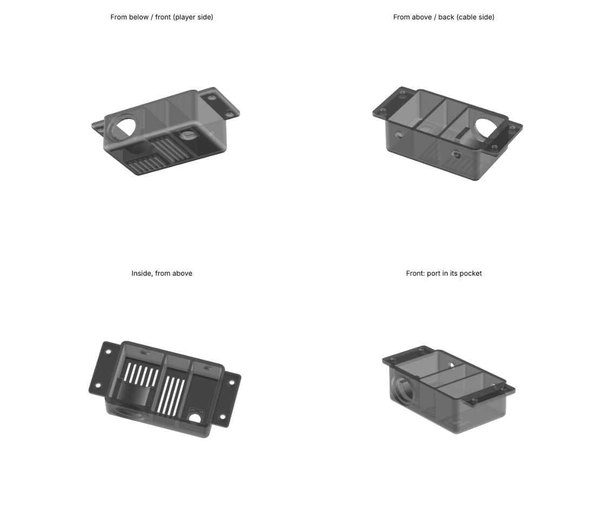
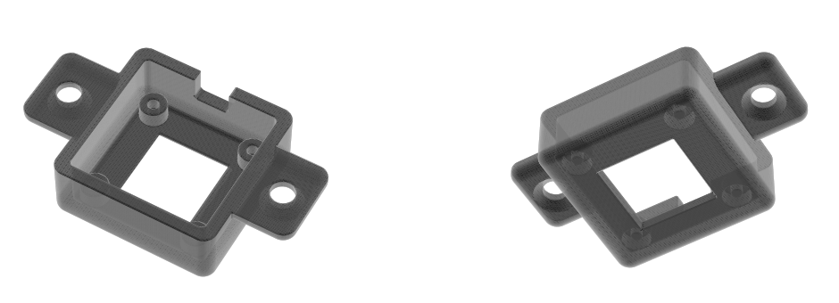

How the smart chairs will work, and what to buy for one table. A plan, not built yet.
How the chairs work
Every chair has its own number (C1, C2…) and its own QR code. A player scans the chair's QR once to log into that chair. From then on, the table works out where they are by itself. The dealer doesn't have to do anything.
A player only counts as seated when all three are true:
1
They're logged into the chair (scanned its QR).
2
The chair is within 3 feet of a seat. A small radio tag in the chair tells the table exactly where the chair is.
3
The lap sensor under the rail at that seat sees someone sitting there.
Someone standing behind a player, or a coat left on a chair, can't trip all three, so it won't mess things up.
What happens
→
Pull up to a seat: seated there, hours start.
⇄
Scoot over to another seat: switched to that seat, hours keep running.
←
Pull the chair out past 3 feet, or stand up: on break, seat held, hours stop. Push back in and sit down: back from break.
✕
Seat already taken: nothing changes. A chair never bumps a seated player.
●
Log out (from the phone, the dealer, or the chair card) clears the chair.
Lap sensor: thermal vs. pressure
Thermal, mounted under the rail and aimed down into the lapThe plan
Lives in the table and runs on the table's power, so the chairs only carry the radio tag.
Aimed down, it only sees a lap tucked up to the table. Someone standing behind or leaning over isn't in its view.
A bag or coat on the chair isn't warm, so it doesn't count as a player.
Catch: a seat stays warm for a minute or two after someone gets up, so a break may start a little late. The chair's distance usually catches it first.
Pressure plate in the seat cushion (not the plan)
Would mean opening up every chair cushion to install it, and needs power or a battery in every chair.
A bag or coat on the seat looks like a player.
Phone on the rail: charge and log in
The goal: a player sets their phone on the rail at their seat. It charges, and it logs them in to that seat. The chair then keeps their time accurate (sitting, on break, gone).
USB-C charging port under the rail at each seat (cheaper than a wireless pad and works with every phone). On its own it only charges; it can't tell whose phone it is.
NFC tag next to the pad, under the rail cover. It holds that seat's sign-in link (the same one the seat QR uses, e.g. player-tracker.html?join&t=2&s=5).
What the player sees: they set down an unlocked phone and a notification pops up; one tap opens their sign-in for that seat. A phone that's signed in before goes straight to asking the dealer for the seat.
Then the chair takes over: once they're in, the chair's tag and the lap sensor keep their hours (sitting = time counts, pulled out = break).
Hardware for one table (7 seats)
Part
Where
Qty
UWB tag — Qorvo DWM3001CDK board, set up as a tag. Works like an AirTag: ultra-wideband finds its spot to within a few inches (plain Bluetooth can be off by feet).Range: accurate to about 4–6 in (Qorvo spec: under 15 cm). Reaches well past a table; it's built for whole rooms.DigiKeyMouserAmazon
Recessed under each chair seat, with a coin/small battery
7
UWB anchor — same Qorvo DWM3001CDK board, set up as an anchor. Three or four of them let the table work out where every chair is at once.Range: same board as the tag, so same accuracy.DigiKeyMouserAmazon
Under the rail, spread around the table
4
Thermal lap sensor — Adafruit AMG8833 IR Thermal Camera Breakout (product #3538), a Panasonic Grid-EYE 8×8 heat grid on a ready-to-plug board.Range: picks up a person up to about 23 ft (7 m); a lap 1–2 ft below the rail is easy. Reads 32–176°F, ±4.5°F, 10 times a second.Adafruit ($44.95)DigiKeyChicago Electronic Distributors
Under the rail at each seat, aimed down at the lap
7
Table hub — Raspberry Pi 5 (4 GB). Reads the anchors and the lap sensors and sends the chair positions to Firebase; Dealer Control and the Floor update live like they do now.Range: n/a, it's the brain. Plugs into the anchors and lap sensors.AdafruitAmazon
Under the table
1
USB-C charging port — a panel-mount USB-C charging port under the rail at each seat, fed from the table's power supply. Every phone works with it and it's rated for far more plug-ins than USB-A. (Wireless pads were about $105 a seat and need the phone in exactly the right spot; maybe later.)Power: plan about 20 W per seat so every seat can charge at once.
Under the rail at each seat
7
NFC tag — NTAG215 round sticker, 25 mm (1 in), written with that seat's sign-in link.Range: a phone reads it from about 1–2 in (1–5 cm), so it has to sit just under the rail top. Not through metal.GoToTagsAmazon
In the rail next to each charging port
7
Odds and ends — USB hub and cables, power supply, wiring for the lap sensors, chair batteries, small cases.
Table and chairs
—
Rough prices: Qorvo DWM3001CDK about $30 each (11 boards, around $330). AMG8833 $44.95 each at Adafruit (7, about $315; cheaper at 10+). Raspberry Pi 5 4 GB $130 at Adafruit. USB-C ports are a few dollars each. NFC stickers are a dollar or two each. Prices change; check before ordering.
Heat sensor: cheap one vs. grid one
One per seat, under the rail, aimed down at the lap. A 10-seat table needs 10. Either kind only says "warm or not": the chair's tag says who it is.
Cheap: Melexis MLX90614, about $16 each (Adafruit). Reads one temperature for the whole spot it's aimed at; warm = someone's sitting. Can be fooled by a hot coffee or a hand from the next seat. 10 seats: about $160.
Grid: Adafruit AMG8833, $44.95 each (Adafruit). 64 little heat spots in an 8×8 grid on a chip about the size of a fingernail, so it sees a lap-sized shape and can tell it from a cup. About a 60° view: from under the rail it covers about one seat. 10 seats: about $450 (cheaper at 10+).
3D-printed cases and chair batteries: the plan
Seat sensor box: start from a free case for the heat sensor and change it so the sensor looks down through an open hole (heat doesn't pass through clear plastic). Stick or screw it under the rail at each seat.
Cheap sensor: compact MLX90614 case (holds a small ESP32 board too).
Grid sensor: AMG8833 sensor shell (add a mounting tab).
Chair battery: a rechargeable 18650 cell (flashlight battery) in a click-in holder with a USB-C charging board, so batteries swap in seconds. Free file: spring-loaded 18650 holder (made for a TP4056 charging board). Keep a few charged spares; the app can warn when a chair is low. Parts: a kit of 10 TP4056 USB-C charger boards (with protection) + 10 18650 holders is about $8; wire the battery to B+/B− and the chair tag to OUT+/OUT−. Use name-brand 18650 cells (Samsung, Molicel, LG), 2,500–3,500 mAh; skip "9,000 mAh" fakes.
Chair tag box: a small box for the UWB tag, joined to the battery holder. The whole unit screws under the center of the seat, so the spot it reports is where the player sits.
Table receivers: 3 or 4 small boxes for the UWB anchors, under the table near the corners.
Printing: your own printer, a makerspace or library, or an online print service.
Test first: print one seat box and one chair unit, check the fit and the readings, then print the rest.
Seat module: heat sensor + USB-C in one printed case

One per seat, screwed up under the rail. Left to right as the player sees it: the USB-C fast charger, a 1-inch air gap with vents (so the charger's warmth doesn't fool the heat sensor), and the heat sensor looking down at the lap through a flared window in the bottom.
Size: about 4.3 × 2.8 × 1.8 in (110 × 70 × 46 mm), plus a mounting ear on each end.
Tough: 3.5 mm walls, rounded corners, and the port sits 3 mm back in a pocket so knees and bags can't knock it off. Print in PETG or ASA, 4 walls, 30% infill.
Mounting: 4 countersunk holes for #8 wood screws up into the table. The top is open; the table's underside closes it.
Drop-in, nothing to line up: the charger lies in a U-shaped cradle that holds it at the hole's height, then slides forward through the hole. The heat sensor board drops into a little nest over its window and snaps under two small lips. Every hole and pocket has 0.5 mm of play.
Charger it's drawn for: Powerwerx PanelQCUSBC (USB-C PD fast charging, blue LED, 1-1/8 in hole, 1-7/8 in deep, runs on 8–32 V). Feed it 12 V; nine seats charging at once is roughly 15 A at 12 V.
Back: one network jack (RJ45) for the seat's one Cat6 cable (see below). A small pass-through carries the 12 V from the seat board over to the charger.
Sizes are starting guesses. Measure the real parts and change the numbers at the top of the .scad file in OpenSCAD (free), then export a new STL. If the heat reading drifts while a phone fast charges, widen the gap to 2 in.
Sensor box: heat sensor only, no charger (AMG8833)

For seats without a phone charger. A small printed box for the Adafruit AMG8833 8×8 heat grid board (25.6 × 25.3 mm). No charger means no extra heat near the sensor, so no air gap.
Size: about 1.3 × 1.2 × 0.7 in (32 × 31 × 17 mm), plus a screw ear on each side.
Board goes in face-down: it drops in from the open top onto 4 posts, the silver sensor looking down through a 14 mm square window at the lap. Four M2.5 self-tapping screws (about 6 mm long) hold it. 0.5 mm of play all around.
Mounting: the open top screws flat against the underside of the rail with 2 countersunk #6 wood screws.
Cable: a notch in the back wall for the Cat5e. Wire VIN, GND, SDA, SCL to the board's bottom pins (or use its STEMMA QT plug with an adapter).
Power: the board runs on 3–5 V. Without chargers, the cable doesn't need 12 V; send 5 V from the hub box instead. Don't feed this board 12 V.
Check before printing: the post spacing (20.3 mm) is a guess from Adafruit's usual 0.1 in hole spacing. Measure your board and change HOLE at the top of the .scad file.
One printed tray per seat for the prototype parts: the Teyleten AMG8833 (blue board, about 18 × 17 mm) and an RJ45 breakout with screw terminals (the $16.99 four-pack). No soldering on the jack side.
Size: about 2.5 × 1.2 × 0.8 in (63 × 31 × 20 mm), plus a screw ear on each long side.
Left bay: the sensor board drops in face-down onto 4 corner pads, the chip looking through a 13 mm window at the lap.
Right bay: the RJ45 board sits on 4 low pads, its jack poking out an opening in the end wall for the Cat5e.
Wiring: 4 short jumper wires through the notch in the divider: sensor VIN, GND, SCL, SDA to the RJ45 board's screw terminals. Send 5 V, not 12 V, down the cable.
Mounting: open top screws flat under the rail with 2 countersunk #6 wood screws.
Sizes are guesses until the parts arrive (the RJ45 board is drawn as 36 × 26 mm). Measure both boards and where the jack sits, and I'll refit it.
Every seat module gets one store-bought Cat5e network cable (Cat6 works too, same plug) back to its own jack in the hub box under the table. The cable carries the 12 V for the charger and the heat sensor's data. Nothing custom: any patch cable plugs in. Every table is wired for 10 seats: cash games use 9, seat 10 gets turned on for 10-handed tournaments. The shuffler keeps its own power cord.
Pins (T568B)
Wire colors
Carries
4 + 5 + 1
blue, blue-white, orange-white
+12 V (three wires together)
7 + 8 + 2
brown-white, brown, orange
Ground (three wires together)
3
green-white
Sensor data (SDA)
6
green
Sensor clock (SCL)
Why it works: a charger pulls about 2 A at 12 V; split over three wires that's under 0.7 A each, comfortable for Cat5e's thinner wires over a few feet. Wired in parallel (a star): every seat has its own cable and fuse, so one bad seat doesn't take the others down.
Data wires: SDA and SCL share the green pair. Fine for short runs at a slow sensor speed (100 kHz or less); test on a real table.
The 3.3 V for the heat sensor is made on the seat board from the 12 V, so no extra wire.
Label every jack "12 V — NOT ETHERNET" so nobody plugs a router or laptop into it.
Before buying: check the cable's rating (solid copper, not copper-clad aluminum).
Seat board (to have a board maker build)
One small board inside each seat module, about 1.6 × 1 in (40 × 25 mm). Until it's made, off-the-shelf RJ45 breakout boards with screw terminals do the same job for testing.
RJ45 jack (through-hole, faces out the back of the case).
Heat sensor MLX90614 (3.3 V version) soldered on the bottom, pointing down through the case window.
3.3 V regulator that takes 12 V in (for example MCP1703A, good up to 16 V).
Resettable fuse (about 2.5 A) on the 12 V, plus a surge diode on the 12 V and on the two data lines.
Two 1/4 in quick-connect tabs (12 V and ground) with short wires to the charger's blade terminals.
Hub box (one per table):
12 V power supply, about 350 W (Mean Well-type; 10 chargers need about 250 W), plugged into a power strip under the table. The shuffler plugs into the same strip on its own cord.
10-port RJ45 jack panel (or 10 RJ45 breakout boards with screw terminals), each jack with its own fuse on the 12 V. Not a network switch: these cables carry 12 V and would fry one.
Raspberry Pi 5 on a 12 V → 5 V converter.
Two I2C switch boards (TCA9548A, 8 channels each): each seat gets its own data channel, so all ten heat sensors can be the same part with no address setup, and the long cables don't add up on one line.
The 4 chair receivers plug into the Pi by USB.
Tablet power: a plain 12 V → USB-C charger (not fast charging), always plugged in. Cheap tablets kept full all day can swell: check every few months for a bulging back or a lifting screen.
This is a plan to hand to a board maker (JLCPCB, PCBWay) or an electronics person to turn into a real board. Parts and values get checked when the board is drawn.
Hub box wiring (all 10 seats in one box)
From
To
Carries
Power supply +
each fuse → jack pins 4, 5, 1
+12 V to every seat
Power supply −
every jack pins 7, 8, 2
Ground
Pi pin 1 (3.3 V) and pin 6 (GND)
both switch boards VIN and GND
Power for the switch boards
Pi pin 3 (GPIO2, SDA)
both switch boards SDA
Data
Pi pin 5 (GPIO3, SCL)
both switch boards SCL
Clock
Switch board 1, channels 0–7
jacks S1–S8, pin 3 (SDA) and pin 6 (SCL)
Seats 1–8
Switch board 2, channels 0–1
jacks S9–S10, pin 3 and pin 6
Seats 9–10 (6 spare channels)
12 V → 5 V converter
Pi USB-C power in
Power for the Pi
Switch board 2's address: bridge its A0 pad so it answers at 0x71 (board 1 stays at 0x70).
Pull-up resistors (about 4.7k) on each seat's SDA and SCL, on the seat board, if the sensor board doesn't have them.
Short jumper wires and screw terminals; no soldering needed for a test build.
Hub boxes: main + side (plan)
Split by side of the table, with Cat6 everywhere. Each box has an 8-port keystone panel: 6 seat jacks (5 seats + 1 spare) and 2 USB jacks for the chair receivers. Each seat's one Cat6 carries both the 12 V for its phone charger and the heat sensor's data; no separate power wire. Each box has its own 12 V supply plugged into the power strip, because one link cable can't carry five chargers' worth of power.
Two link Cat6 cables between the boxes: one for the side box's sensor data (switch board B), one for its two receivers through a USB-over-Cat6 extender pair (a small USB hub in the side box, both receivers plugged into it). Plain Cat6 wires can't carry USB on their own.
Seat jacks: pins 4, 5, 1 = +12 V; 7, 8, 2 = ground; 3 = SDA; 6 = SCL. At the seat, the USB-C charger takes the 12 V and a small 12 V → 5 V step-down (or the seat board) powers the heat sensor. Never put 12 V on the sensor.
Data link pins: 1 + 2 = SDA + ground, 3 + 6 = SCL + ground, 7 = +3.3 V for switch board B, 8 = ground (4, 5 unused).
Power size: six chargers at about 24 W each is about 145 W, so the side box gets a 150 W supply. The main box also runs the Pi (up to 27 W), so it gets about 200 W.
Switch boards: A stays at 0x70, B gets its A0 pad bridged for 0x71. Seats use channels 0–4.
Main box parts (search Amazon unless noted):
Box: "ABS project box 10x8x4" (plastic, so the receivers' radio isn't blocked).
Power: Mean Well LRS-200-12 (12 V, about 200 W); "6 way blade fuse block" + 3 A blade fuses; "12V to 5V 5A USB-C converter" for the Pi; a short power cord with switch to the strip.
Brains: Raspberry Pi 5 4 GB + microSD card (Micro Center, PiShop.us or Adafruit); "TCA9548A I2C multiplexer"; "Raspberry Pi GPIO screw terminal HAT".
Panel: "8 port keystone patch panel"; "Cat6 keystone jack" × 6; "USB keystone jack" × 2 + "USB-A male to male 6 inch" × 2.
Links: "Cat6 keystone jack" × 1 (data link); "USB over Cat6 extender" pair (receiver end goes here).
Wiring: 18 AWG wire, lever connectors (Wago-type).
Side box parts:
Same box, panel, 6 Cat6 + 2 USB keystone jacks, fuse block, power cord and wiring as the main box.
Mean Well LRS-150-12 (12 V, 150 W); one "TCA9548A I2C multiplexer"; a small powered "USB 2.0 hub" (4-port); the other half of the USB-over-Cat6 extender pair.
No Pi, no 5 V converter.
Keep in mind
Metal blocks the radio. Wood, plastic, foam and fabric are fine. If a chair has a metal frame or seat pan, the tag can't sit inside or behind it.
Tags can be recessed: route a pocket under the seat or under the rail and drop them in.
Chair batteries need a swap schedule.
Programming: the Qorvo boards come with firmware that already works out positions; each board just gets set as a tag or an anchor. The only new code is the small bridge on the Raspberry Pi that sends positions to Firebase.
Phone tap: iPhones read the NFC tag on their own only when unlocked and the screen is on; Android needs NFC turned on. The QR at each seat stays as the backup.
Charging ports need power run under the rail (see Under the table), and the rail cover has to be thin enough (no metal) for the NFC tag to work through it.
Test it now: the Player Tracker table already acts this out. Drag chairs around, and use Sit / Stand on a chair's card to play the lap sensor.